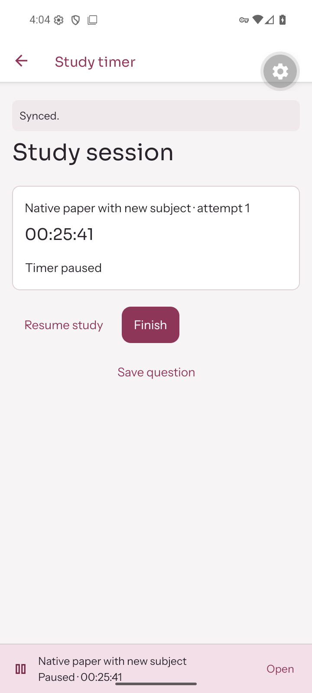

Mosaic for Android
Your studying,
kept together.
Plan the day, record the work you actually do, and keep papers and questions where you can find them again.
Version 1.0.5, build 12
Android 7 or later · 107 MB · Free download

Inside Mosaic
From a plan to a record of your work.
- Today and Schedule
- Keep timed and untimed activities in one agenda. Mark an activity complete when you decide it is done.
- Study time
- Start, pause and resume a timer, or log a past session. Saved time and activity completion stay separate.
- Papers and practice
- Keep attempts, marks and corrections together. A finished attempt can wait for marking.
- Questions and resources
- Save material for later review. Keep worked answers hidden until you choose to reveal them.
- Progress
- Review recorded study time, practice results and weekly targets without treating missing records as progress.
Install Mosaic
Download the APK
Use the button below on your Android phone. This is a direct install, separate from Google Play.
Open the downloaded file
If Android asks, allow your browser or file manager to install this app. Keep Android's security checks enabled.
Sign in
Open Mosaic and continue through Google's normal sign-in screen. Install this update over the existing app to keep its device data.
The project
Made around a student's study routine.
Mosaic is a personal project by Muhammad Zunair, built to bring a study plan, actual study time, practice papers and saved questions into one place.
I defined Mosaic's study workflows and made the product, visual and creative decisions. AI implemented the graphical interface and assisted with Android development under my direction.